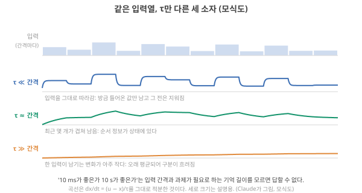
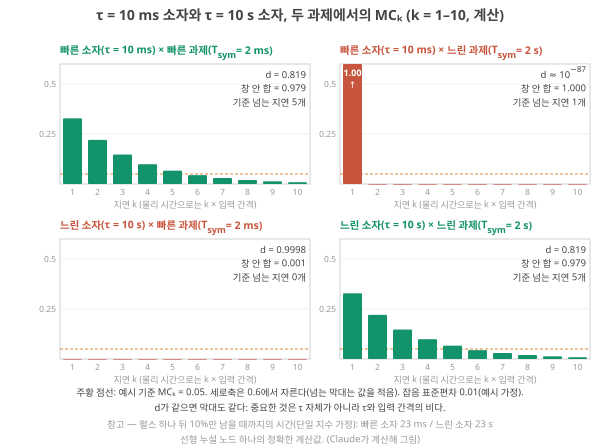
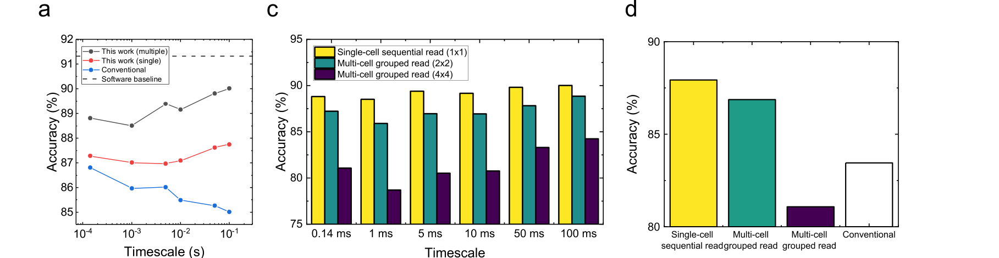
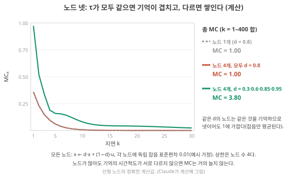
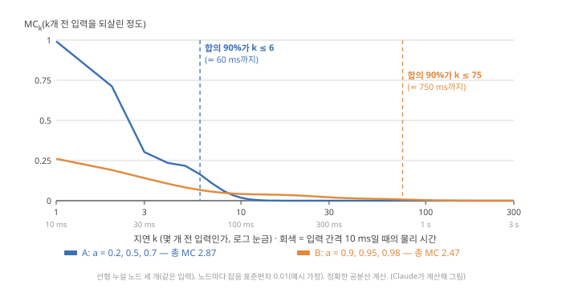

Day 24. 과제의 시간척도와 좋은 memory의 조건
Phase 3 · 좋은 시스템이란 무엇인가
이번 질문 과제의 시간척도에 기억을 어떻게 맞추고, device를 늘리면 기억도 느나?
왜 배우나 (내 소재 연구와의 연결) 내 소재의 τ가 10 ms인지 10 s인지는 그 자체로 좋고 나쁨이 아닙니다. 응용의 입력 간격(예: 센서 신호가 몇 ms마다 들어오나)과 비교해서 맞는지 판단해야 하고, 여러 device·여러 τ를 어떻게 모아야 기억이 늘어나는지도 정해야 합니다.
오늘의 장면 (입력 → 내부 변화 → 출력) 입력 = device의 τ와 과제의 입력 간격 T_sym → 내부에서 하는 일 = d = e^(−T_sym/τ)를 계산해 최근 몇 개 입력이 상태에 얼마나 남는지 보고, 노드를 여럿 합칠 때 τ가 같은지 다른지 따진다 → 출력 = 이 device가 이 과제에 맞는가(너무 빨리 잊음 / 너무 오래 끌고 감 / 적당)에 대한 조건부 판단.
오늘 반드시 어느 τ가 좋은가는 τ 하나가 아니라 τ ÷ 입력 간격과 과제가 필요로 하는 기억 창이 정한다. 같은 τ의 device를 여러 개 쓰면 흔적이 겹쳐 MC가 거의 안 늘고, 다른 τ를 섞어야 쌓인다.
나중에 더 봐도 되는 것 Lee 2025 데이터로 d 계산하기, 선형 노드와 비선형 노드의 MC 비교, ‘좋은 memory의 조건’ 구간 끝의 "MC가 높을수록 좋다" 반론. 논문에서 "기억이 길다"는 문장을 만났을 때 ‘좋은 memory의 조건’ 구간의 질문 여섯 개를 대 보면 됩니다.
다음으로 넘어가는 기준 '오늘 반드시'를 내 말로 한두 문장 말할 수 있으면 됩니다. 나머지는 뒤의 Day에서 다시 나옵니다.
이후 쓰이는 곳 Day 31–32 같은 기억의 디지털 비용, Day 39–46 이온 이완으로 τ 여럿 만들기, Day 55–56 내 device τ 분포가 응용의 입력 간격과 맞는지 판단
지난 학습 복습
지난 학습 단위(Day 23 · 기억의 세 가지 양과 MC 손계산)의 핵심을 다른 예로 확인합니다. 고르는 즉시 맞았는지와 이유가 보입니다. 틀려도 아래 학습자료는 그대로 열려 있고, 틀린 문제에는 다시 볼 곳이 붙습니다.
학습자료
3. 10 ms냐 10 s냐: 과제의 시간척도에 맞춘다
끝나면 할 수 있는 것. 입력 간격 \(T_{\text{sym}}\)과 과제가 필요로 하는 기억 창을 써서 "τ = 10 ms device와 τ = 10 s device 중 어느 쪽이 좋은가"에 조건을 붙여 답하고, 두 가지 실패(너무 빨리 잊음, 너무 오래 끌고 감)를 숫자로 보일 수 있다.
상황. 내 hydrogel의 τ가 약 10 s인데, 다루려는 센서 신호는 2 ms마다 한 값씩 들어옵니다. 이 소재를 그대로 쓸 수 있을까요? 반대로 τ가 10 ms인 소재로 2 s마다 들어오는 신호를 다루면 어떨까요? 답은 τ 하나로 정해지지 않고 입력 간격과의 비로 정해집니다. 이 구간은 그 비를 계산하는 법입니다.
이 질문을 처음 들으면 "10 s가 1,000배 오래 기억하니 좋다"고 답하기 쉽습니다. ‘MC 손 계산’ 구간에서 이미 반례를 봤습니다. \(d\)가 1에 가까워지면 기억은 커지는 것이 아니라 퍼지고, 잡음이 있으면 퍼진 조각이 묻힙니다. 그렇다면 \(d\)는 무엇이 정하나? τ 하나가 아니라 τ와 입력 간격의 비입니다. 그리고 "어느 쪽이 좋은가"를 정하는 마지막 재료는 과제가 얼마나 먼 과거를 필요로 하는가입니다.
먼저 "시계열"과 "입력 간격"을 다시 짚습니다. 시계열(time series)은 일정한 시간 간격으로 잰 숫자들의 줄입니다. 1초에 250번 재면 간격은 4 ms입니다(Day 13 기초: 시계열). RC에서는 이렇게 이어지는 숫자 하나하나를 device에 펄스로 넣습니다.
무엇을 볼지. 그림 4는 같은 입력열(맨 위, 막대 하나가 입력 하나이고 막대 폭이 입력 간격)을 τ만 다른 세 device에 넣었을 때의 상태입니다. 세 줄은 위에서부터 τ가 입력 간격보다 훨씬 짧을 때, 비슷할 때, 훨씬 길 때입니다. 각 곡선이 입력 막대를 얼마나 따라가는지, 그리고 맨 아래 곡선이 왜 거의 평평한지 보세요.

파랑은 방금 입력만 남기고 그 전을 지우는 "너무 빨리 잊음", 주황은 입력 하나가 상태를 \((1-d)\)만큼만 움직여 "한 입력의 흔적이 너무 작음"의 모습입니다. 초록처럼 최근 몇 개가 겹쳐 남는 쪽이 나은지는 과제가 몇 개 전 입력까지 필요로 하는지에 달렸습니다. 아래 기초 상자가 이것을 숫자로 정합니다.
device 시간상수와 과제 시간척도의 정합
① 왜 필요한가. 같은 device가 어떤 과제에서는 쓸 만하고 어떤 과제에서는 쓸모없습니다. 그 차이를 device 탓이나 과제 탓으로 돌리기 전에, 둘의 시간척도가 맞았는지부터 확인해야 합니다.
② 무엇인가 — 세 개의 시간.
- device의 시간상수 τ [s]: 상태가 스스로 원래로 돌아가는 속도(‘세 가지 기억’ 구간).
- 입력 간격 \(T_{\text{sym}}\) [s]: 연속한 두 입력이 시작되는 시각 사이의 간격. Singh 2026은 이것을 "연속한 두 부호화 입력 기호(symbol)의 시작 사이 시간"으로 정의하고, 펄스 폭이 그보다 짧아도 이 정의를 쓴다고 적습니다. 그리고 "언제 상태를 읽느냐"(state-sampling delay)와는 다른 양이므로 따로 보고하라고 합니다. Singh 2026, p.13 이 교재에서는 "입력 간격"이라고 부릅니다.
- 과제의 기억 창 [s]: 답을 내는 데 필요한 과거의 길이(이 교재의 말. 여기서 과제는 device로 풀려는 계산 문제, 예: 다음 값 예측·분류). 예를 들어 "최근 10개 입력의 패턴"이 필요하면 기억 창은 \(10 \times T_{\text{sym}}\)입니다. \(k\)개 전 입력의 물리적 시간 지연은 \(\tau_k = k\,T_{\text{sym}}\)입니다. Singh 2026, p.13
③ 무슨 일이 어떤 순서로.
단계 1 — 한 간격 동안 얼마나 남나. 입력 하나가 상태를 바꾼 뒤 다음 입력까지 \(T_{\text{sym}}\) 동안 상태가 \(e^{-t/\tau}\)로 감쇠하므로, 남는 비율은 \(d = e^{-T_{\text{sym}}/\tau}\)입니다(‘MC 손 계산’ 구간의 \(d\)).
단계 2 — \(d\)가 기억의 모양을 정한다. \(d\)가 0에 가까우면(τ ≪ \(T_{\text{sym}}\)) 상태는 방금 입력만 품습니다. \(d\)가 1에 가까우면(τ ≫ \(T_{\text{sym}}\)) 입력 하나가 상태를 아주 조금만 움직이고, 그 흔적이 수천 개 입력에 걸쳐 퍼집니다.
단계 3 — 과제의 창과 겹쳐 보기. 과제가 필요로 하는 지연 \(k = 1, 2, \ldots, K\)에서 \(MC_k\)가 잡음 수준보다 충분히 커야 합니다. 창 안의 \(MC_k\) 합이 클수록 좋고, 창 밖으로 길게 끌고 가는 것은 득이 없거나 해롭습니다(아래 ‘이온·RC와의 연결’ 항목에서 두 실패를 다시 봅니다).
④ 작은 숫자로 — 10 ms device와 10 s device. 두 device(τ = 10 ms, τ = 10 s)와 두 과제를 놓습니다. 빠른 과제는 입력이 2 ms마다 오고(예: 1초에 500번 재는 진동 신호), 느린 과제는 2 s마다 옵니다(예: 몇 초에 한 번 바뀌는 환경 신호). 두 과제 모두 최근 10개 입력(\(k = 1\)–10)이 필요하다고 합시다. 잡음은 ‘MC 손 계산’ 구간과 같이 표준편차 0.01로 둡니다(예시 가정).
| device × 과제 | \(T_{\text{sym}}/\tau\) | \(d = e^{-T_{\text{sym}}/\tau}\) | 창(\(k\) = 1–10) 안의 \(MC_k\) 합 | \(MC_k > 0.05\)인 지연 수 |
|---|---|---|---|---|
| 10 ms × 빠른 과제(2 ms) | 0.2 | 0.819 | 0.979 | 5 |
| 10 ms × 느린 과제(2 s) | 200 | ≈ 0 (10⁻⁸⁷) | 1.000이지만 전부 \(k\) = 1 | 1 |
| 10 s × 빠른 과제(2 ms) | 0.0002 | 0.9998 | 0.001 | 0 |
| 10 s × 느린 과제(2 s) | 0.2 | 0.819 | 0.979 | 5 |
계산 과정을 칸마다 봅니다.
- 10 ms × 빠른 과제. \(2/10 = 0.2\), \(d = e^{-0.2} = 0.819\). \(MC_1\)–\(MC_5\) = 0.329, 0.220, 0.148, 0.099, 0.066으로 최근 다섯 입력이 기준 0.05를 넘습니다.
- 10 ms × 느린 과제. 2 s 동안 τ의 200배가 지나 상태가 완전히 원래로 돌아갑니다. 방금 입력은 100% 남지만 그 전 입력은 흔적이 없습니다. 너무 빨리 잊는 실패입니다.
- 10 s × 빠른 과제. 입력 하나가 상태를 \((1-d) = 0.0002\)만큼만 움직이고(‘MC 손 계산’ 구간 첫머리 식의 '조금밖에 못 감'), 그 흔적이 약 5,000개 입력(\(1/(1-d)\))에 걸쳐 퍼집니다. 신호의 표준편차(0.0058)가 잡음(0.01)보다 작아 잡음이 흔들림의 75%를 차지하고, 입력들의 몫인 MC 0.25마저 수천 개 지연에 흩어져 창 안에는 0.001만 남습니다. 나머지 약 0.249는 창 밖(\(k > 10\)), 곧 과제에 필요 없는 먼 과거의 흔적입니다. 입력열이 바뀌어도 이 흔적이 남아 다음 입력열로 넘어오는 것(carry-over)이 아래 ‘이온·RC와의 연결’ 항목의 둘째 실패입니다. retention(10% 기준)이 23 s로 1,000배 긴 device가 이 과제에서는 거의 아무것도 기억하지 못합니다.
- 10 s × 느린 과제. 첫째 칸과 똑같은 막대가 나옵니다. \(T_{\text{sym}}/\tau\)가 같기 때문입니다. 좋은 τ는 절대값이 아니라 입력 간격에 대한 비율로 정해집니다.

⑤ 이름과 정확한 뜻. 이것을 시간척도 정합(timescale matching)이라 부릅니다. 이 교재의 뜻: device의 τ(들)가 입력 간격 \(T_{\text{sym}}\)과 과제의 기억 창 \(K \cdot T_{\text{sym}}\) 사이에 놓여, 창 안의 지연들이 잡음보다 큰 \(MC_k\)를 갖는 상태. 하나의 숫자로 "τ ≈ \(T_{\text{sym}}\)"이라고 줄여 말하기도 하지만, 정확히는 창 전체를 덮어야 합니다.
⑥ 이온·RC와의 연결 — 두 가지 실패. Singh 2026은 지연별 기억 곡선과 물리 지연 \(\tau_k = k T_{\text{sym}}\)이 측정한 과도 응답을 과제가 쓸 수 있는 시간 맥락과 이어 준다고 쓰고, 두 실패를 함께 적습니다. "과제에 필요한 지연 전에 정보를 잃는 reservoir는 시간 맥락이 부족하고, 너무 느린 회복은 명목상 독립인 입력열 사이에 원치 않는 넘어옴(carry-over)을 만든다." Singh 2026, p.18–19 같은 글의 표는 이 설계 규칙("과제와 reservoir의 시간척도를 맞춰라")이 깨졌다는 신호로 "과제가 필요로 하는 지연 전에 기억이 사라짐, 연속 입력 사이의 과도한 넘어옴, 입력 속도에 따라 성능이 크게 변함"을 듭니다. Singh 2026, p.9, Table 1 Liang 2024는 물리 노드의 τ가 "전체 시스템의 동작 시간척도를 정한다"고 쓰고, 센서 근처 응용에서는 자연 신호와 상호작용하려면 생물학적 시간척도(1 ms 이상)가 필요하며 τ가 짧으면 실시간 신호와 결합하지 못한다고 씁니다. Liang 2024, p.198 예로 τ가 약 1 s인 rotating-neuron RC는 손글씨 궤적 끝의 상태가 과거 약 0.8 s의 정보를 담아 중간 상태를 따로 저장할 필요가 없었고, τ를 짧게 하면 궤적을 빨리 잊어 성능이 떨어졌다고 소개합니다. Liang 2024, p.200
⑦ 짧은 확인. τ = 50 ms device에 입력을 10 ms 간격으로 넣으면 \(d\)는? (\(e^{-10/50} = e^{-0.2} = 0.819\). 위 그림 5의 (a)·(d)처럼, 비율이 같으면 같은 모양이 나옵니다.)
3-1. 누가 입력 간격을 정하나
여기서 중요한 구분이 하나 생깁니다. 실시간 신호(심전도, 진동, 말소리)에서는 입력 간격을 신호가 정합니다. 심장은 내 device의 τ에 맞춰 뛰어 주지 않습니다. 이때 정합은 device 쪽을 바꿔서만 맞출 수 있습니다. 반면 저장된 데이터셋(정지 영상인 MNIST처럼 시간이 없는 데이터를 펄스열로 바꾸는 경우)에서는 실험자가 입력 간격을 마음대로 고릅니다. 그러면 어떤 τ의 device든 간격을 맞춰 주면 정합이 됩니다. 이것은 편리하지만, 그 결과가 "이 device가 실제 신호의 시간척도와 맞는다"는 증거는 아니라는 뜻이기도 합니다(Day 27–28에서 자세히). 해석
Singh 2026은 실험 순서로 이 점을 정리합니다. 재료 조성과 device 구조를 고정한 채 먼저 입력 간격, 펄스 폭, 진폭, 바이어스, 상태 읽는 시점 같은 프로토콜 변수를 바꿔 보고, 거기서 재현 가능한 좋은 영역이 나오면 처음의 한계는 "프로토콜과 reservoir 동역학의 불일치"였을 가능성이 크며, 비파괴 범위 안에서 그런 영역이 없을 때 비로소 device 구조나 재료를 바꾸라는 것입니다. Singh 2026, p.8
3-2. 실제 데이터: 데이터 간격이 τ를 넘으면
폴더에 이 현상을 측정으로 보인 논문이 있습니다. Lee 2025(npj Unconv. Comput.)의 HfO₂ 2단자 device는 펄스 뒤 감쇠를 지수 하나로 맞춘 τ가 0.92 ms이고 Lee 2025 (npj), p.2, 펄스 사이 쉬는 구간에 일정한 전압(바이어스 \(V_b\), Day 10의 ‘폴더 논문의 위치’ 구간)을 걸어 두는 방법으로 τ를 최대 123 ms까지 늘립니다(데이터 간격 100 ms, \(V_b\) = 1.6 V). Lee 2025 (npj), p.3 사건 카메라(event camera, 밝기가 바뀐 픽셀만 기록하는 카메라)로 찍은 손글씨 숫자를 네 장의 시간 프레임으로 나눠 픽셀마다 펄스 네 개로 넣는 과제(N-MNIST)에서, 프레임 사이 간격을 0.14 ms에서 100 ms까지 바꿨습니다.
저자들은 "기존 방식(\(V_b\) = 0 V)은 데이터 시간척도가 device 고유의 τ를 넘으면 정확도가 떨어지고", \(V_b\)로 τ를 늘린 방식은 세 자릿수에 걸쳐 정확도를 유지한다고 씁니다. Lee 2025 (npj), p.7
그림에는 비교 대상도 하나 그려져 있습니다. 기준선(baseline)은 device를 빼고 같은 readout을 돌린 성능으로, device가 정말 무언가를 보탰는지 재는 잣대입니다(Day 10 기초 4). 여기서는 원시 프레임 네 장을 그대로 readout에 넣은 성능입니다.

측정한 τ로 \(d\)를 계산해 보기. ‘시간척도 정합’ 구간의 식 \(d = e^{-T_{\text{sym}}/\tau}\)에 이 device의 측정값을 넣으면, 파랑 곡선의 각 점에서 상태에 무엇이 남았는지 숫자로 볼 수 있습니다. 이 과제는 픽셀마다 프레임 넷을 펄스 넷으로 넣은 뒤 conductance를 읽으므로 Lee 2025 (npj), p.6, 읽는 순간 마지막 프레임의 흔적을 1로 놓으면 그 전 프레임들은 \(d\), \(d^2\), \(d^3\)의 무게로 남습니다. 펄스마다 일정한 양을 더하는 Day 15–16의 식으로 본 대략적인 그림이며, 실제 device의 conductance 증가는 선형이 아닙니다. 해석 Claude 계산
| 데이터 간격 \(t_b\) | τ (조건) | \(d = e^{-t_b/\tau}\) | 프레임 넷의 무게(마지막 → 첫째) | 파랑의 정확도(그림에서 읽음) |
|---|---|---|---|---|
| 0.14 ms | 0.92 ms (\(V_b\) = 0) | 0.86 | 1, 0.86, 0.74, 0.63 | 86.8% |
| 1 ms | 0.92 ms | 0.34 | 1, 0.34, 0.11, 0.04 | 약 86.0% |
| 10 ms | 0.92 ms | 약 2 × 10⁻⁵ | 1, 0, 0, 0 | 약 85.5% |
| 100 ms | 0.92 ms | 약 10⁻⁴⁷ | 1, 0, 0, 0 | 85.0% |
| 100 ms | 123 ms (\(V_b\) = 1.6 V) | 0.44 | 1, 0.44, 0.20, 0.09 | (파랑이 아님, 아래 설명) |
읽는 법: 간격이 τ보다 짧은 첫 줄에서는 네 프레임이 모두 상당한 무게로 섞여 남고, 간격이 τ의 10배를 넘는 셋째·넷째 줄에서는 읽는 순간 마지막 프레임만 남습니다. 바이어스로 τ를 123 ms로 늘린 마지막 줄은 100 ms 간격에서도 둘째 줄(1 ms, \(V_b\) = 0)보다 앞 프레임이 더 많이 남습니다. 조건마다의 τ는 저자들이 그림 위의 곡선과 같은 지수 맞춤으로 구했고, 간격이 1 ms보다 길 때 \(V_b\) = 0의 τ는 첫 읽기가 늦어 실제보다 크게 맞춰진다고 적었습니다. Lee 2025 (npj), p.3 그래서 위 표의 \(V_b\) = 0 줄은 τ₀ = 0.92 ms 하나를 모든 간격에 쓴 모형 계산이고, 저자들이 간격마다 맞춘 값이 아닙니다. Claude 계산 빨강('Single') 곡선은 50·100 ms에서 \(V_b\) = 1.2 V를 썼고 Lee 2025 (npj), p.7, 그 조건의 τ는 본문에 숫자로 나오지 않아 마지막 줄과 바로 이어 볼 수 없습니다. 미확인
이 그림이 오늘 질문에 주는 것은 두 가지입니다. 첫째, 시간척도 불일치는 실제로 성능을 깎는다. 둘째, 그 크기는 과제가 기억에 얼마나 기대느냐에 달렸다. 파랑 곡선이 앞 프레임들을 잊어도 85%를 지킨다는 것은, 이 과제의 정보 대부분이 마지막 프레임 하나에도 들어 있다는 뜻으로 읽힙니다. 해석 기억이 핵심인 과제였다면 떨어지는 폭이 훨씬 컸을 것입니다. 그래서 "τ를 맞췄더니 성능이 올랐다"는 주장을 평가하려면 그 과제가 기억을 얼마나 필요로 하는지를 함께 봐야 합니다(Day 27–28의 주제).
"time-multiplexing의 θ ≈ τ/4가 시간척도 정합이다" — 다른 간격입니다. Liang 2024의 θ ≈ τ/4는 입력 하나를 여러 조각(virtual node)으로 나눌 때 그 조각 하나의 길이에 대한 경험칙입니다. 조각이 너무 길면 다음 값이 오기 전에 포화해 상태가 두 값으로만 몰리고, 너무 짧으면 device가 작은 선형 범위에서만 움직입니다. Liang 2024, p.198 오늘의 입력 간격 \(T_{\text{sym}}\)은 입력과 입력 사이의 간격이고, 기억 창은 과제가 정합니다. 둘 다 τ와 비교하지만 묻는 것이 다릅니다. time multiplexing과 virtual node는 Day 18 기초에 있습니다.
내 device를 쓰고 싶은 신호 하나를 정해 보세요(예: 피부 땀 센서, 심전도, 호흡). 그 신호를 몇 ms 간격으로 재야 하고, 답을 내는 데 몇 초 전까지의 신호가 필요한가요? 그 두 숫자를 내 device의 τ(들)와 나란히 적으면, 앞에서 본 10 ms·10 s device × 빠른·느린 과제 네 칸 표(그림 5) 중 어디에 가까운가요? τ를 모른다면, 그것이 Phase 4·5에서 가장 먼저 잴 숫자입니다. 지금 내 소재의 수치가 없으면 예시(심전도를 4 ms 간격으로 재고 박동 하나 약 0.7 s가 필요, τ는 10 ms와 1 s 두 경우를 가정)로 표를 채우는 것으로 이 질문을 끝내도 됩니다.
생각 정리 보기
- 절차: (1) 입력 간격 \(T_{\text{sym}}\) = 1 ÷ 측정 횟수 [s], (2) 기억 창 = 답에 필요한 과거 길이, 지연 수 \(K\) = 기억 창 ÷ \(T_{\text{sym}}\), (3) \(d = e^{-T_{\text{sym}}/\tau}\)로 창 안의 \(MC_k\)가 충분히 큰지 봅니다.
- 예시 [해석, 모형 계산]: 심전도 4 ms 간격, 창 0.7 s이면 \(K \approx 175\).
- τ = 10 ms: \(d\) = 0.67이라 \(MC_1\) = 0.55, \(MC_2\) = 0.25로 몇 개 전 입력까지만 남습니다. 박동 하나를 덮기엔 너무 빨리 잊는 쪽입니다.
- τ = 1 s: \(d\) = 0.996이라 \(MC_k\) 하나하나가 약 0.008로 작고 175개 이상에 퍼집니다. 잡음이 있으면 구별하기 어려워 '너무 작은 흔적' 쪽입니다.
- 둘 사이(τ가 창의 수십 분의 1–몇 분의 1)가 정합에 가깝고, 내 τ를 모르면 먼저 그것을 재야 합니다.
- 입력 간격 \(T_{\text{sym}}\)
- 연속한 두 입력이 시작되는 시각 사이의 간격. 상태를 읽는 시점과는 다른 양이다.
- 기억 창
- 과제가 답을 내는 데 필요한 과거의 길이. 지연 k의 물리 시간은 τₖ = k × 입력 간격.
- 시간척도 정합
- device의 τ(들)가 입력 간격과 기억 창 사이에 놓여, 창 안의 지연들이 잡음보다 큰 MCₖ를 갖는 상태. 좋은 τ는 입력 간격에 대한 비율로 정해진다.
- 넘어옴 (carry-over)
- 회복이 너무 느려 앞 입력열의 흔적이 독립이어야 할 다음 입력열에 남는 것.
- 정의: 한 간격 동안 남는 비율 \(d = e^{-T_{\text{sym}}/\tau}\)가 기억의 모양을 정한다. 좋은 τ는 입력 간격에 대한 비율과 과제의 기억 창으로 정해진다.
- 숫자: 10 ms × 2 ms 과제와 10 s × 2 s 과제는 똑같다(창 안 합 0.979). 10 ms × 2 s는 방금 입력만, 10 s × 2 ms는 창 안 합 0.001(선형 노드 모형, 잡음 0.01 가정).
- 실패 둘: 창보다 빨리 잊음 / 너무 느린 회복으로 넘어옴 Singh 2026, p.18–19. 실제 측정: 데이터 간격이 τ를 넘으면 정확도가 떨어진다 Lee 2025 (npj), p.7.
- 측정 τ에 이어 보기: Lee 2025 device(τ₀ = 0.92 ms)는 간격 0.14 ms에서 \(d\) = 0.86(네 프레임이 섞여 남음), 10 ms 이상에서 \(d \approx 0\)(마지막 프레임만)이고, 그사이 정확도는 86.8% → 85.0%로 약 2%p 떨어졌다(모형 계산과 그림 읽기).
- 조건: 실시간 신호는 신호가 간격을 정하고, 저장된 데이터는 실험자가 정한다. 후자의 정합은 실제 신호와의 정합을 증명하지 않는다 해석.
- 남은 질문: 시간척도가 다른 device를 여러 개 쓰면? → ‘여러 노드’ 구간.
4. device를 늘리면 기억도 늘까: 같은 τ는 겹치고 다른 τ는 쌓인다
끝나면 할 수 있는 것. 같은 τ의 device를 여러 개 쓰면 MC가 거의 늘지 않고 τ가 서로 다를 때 쌓이는 이유를 말하고, 이온 device에서 여러 시간척도를 만드는 방법이 왜 중요한지 연결할 수 있다.
상황. 앞에서 노드 하나의 MC는 1을 넘지 못했습니다. 상태 숫자가 하나뿐이기 때문입니다. 내 소재로 device를 여러 개 만들 수 있다면 기억도 그만큼 늘어날까요? 그렇다면 상태 숫자를 늘리면, 즉 device를 넷 쓰면 MC도 4가 될까요? Day 19–20의 ‘서로 다른 노드 수’ 구간에서 시뮬레이션 결과를 이미 봤습니다. 서로 연결 없이 같은 입력을 받는 device 20개가 모두 같으면 용량 합이 1.00(device 하나와 같음)이었고, 시간상수만 서로 달라도 6.59였습니다(Day 20의 ‘서로 다른 노드 수’ 구간). 오늘은 그 결과를 노드 둘로 손으로 확인하고, ‘MC 손 계산’·‘시간척도 정합’ 구간의 \(MC_k\) 곡선으로 '어느 지연을 어느 노드가 맡는지'까지 봅니다. reservoir의 상태는 숫자 목록이고 입력이 올 때마다 그 목록이 정해진 규칙으로 update되므로(Day 13 기초: state update), device 넷을 나란히 두면 목록의 숫자가 넷입니다.
τ가 모두 같은 device 넷(\(d\) = 0.8 넷)과 τ가 서로 다른 device 넷(\(d\) = 0.3, 0.6, 0.85, 0.95)의 MC는 각각 얼마쯤일까요? 상한은 4입니다. 그림 6을 보기 전에 짐작을 적어 두세요.
같은 τ의 device 넷은 같은 입력을 받아 같은 모양으로 움직입니다. 입력이 device마다 다른 배율로 들어가도, 선형 device라면 상태는 서로의 배수일 뿐입니다. readout 입장에서 넷은 한 숫자를 네 번 본 것과 같아서, 새로 꺼낼 수 있는 과거 정보가 없습니다. 측정 잡음이 device마다 독립이면 넷을 평균해 잡음이 조금 줄 뿐입니다. 반면 τ가 다르면 각 device가 다른 무게로 과거를 섞으므로(빠른 device는 최근을, 느린 device는 먼 과거를), readout이 이들을 더하고 빼서 특정 지연의 입력을 골라낼 수 있습니다.
노드 둘로 확인하기. 가장 작은 예로, 혼자서는 기억이 전혀 없는 노드 A(\(d = 0\), 상태 = 방금 입력 \(u_1\))와 ‘MC 손 계산’ 구간의 노드 B(\(d = 0.5\), 상태 = \(0.5u_1 + 0.25u_2 + 0.125u_3 + \cdots\))를 함께 읽는다고 합시다. B 혼자로는 \(u_2\)의 몫이 0.19뿐이었습니다. readout이 \(2 \times B - A\)를 만들면 \(u_1\)이 지워져 \(0.5u_2 + 0.25u_3 + 0.125u_4 + \cdots\)가 남고, 이제 \(u_2\)가 이 흔들림의 75%를 차지합니다(‘d = 0.5 손 계산’ 절 표와 같은 계산: 0.25 ÷ 0.333). 그래서 둘을 함께 읽으면 \(MC_1 = 1\)(A가 곧 \(u_1\)), \(MC_2 = 0.75\), …로 총 MC가 2(= 상태 수)가 됩니다(잡음 없음). Claude 계산 혼자서는 '기억 없는 device'인 A가 B의 기억을 또렷하게 만든 것입니다.
반대로 B와 같은 \(d\)의 노드 B′를 더하면(입력 배율만 달라 B′ = 2 × B), 어떻게 더하고 빼도 B를 몇 배 한 것만 나와 \(u_1\)을 지울 수 없고, 총 MC는 1 그대로입니다.
무엇을 볼지. 그림 6의 가로축은 지연 \(k\), 세로축은 \(MC_k\)(0–1)입니다. 회색 점선(노드 하나)과 빨강(같은 \(d\)의 노드 넷)이 얼마나 겹치는지, 초록(서로 다른 \(d\) 넷)이 어느 지연에서 더 높은지 보세요. 오른쪽 숫자는 모든 지연을 더한 총 MC이고, 상한은 노드 수 4입니다.

이것은 폴더의 리뷰가 지적하는 한계와 정확히 같습니다. Liang 2024는 device 여러 개를 나란히 쓰는 dynamic-device RC 구조에서 "MC가 단일 device의 용량에만 의존하며, 병렬 device들의 MC는 더 큰 값으로 쌓이기보다 대부분 겹친다"고 쓰고, 그래서 MC가 낮은 수준에 머물며 중간 상태를 외부 메모리 버퍼에 저장해 보완할 수 있지만 그 대가가 따른다고 씁니다. Liang 2024, p.196 같은 리뷰는 device 사이의 시간 동역학 편차가 상태의 풍부함을 어느 정도 높이고, 편차가 너무 작은 device 묶음은 readout의 과적합 같은 문제를 일으킬 수 있다고도 씁니다. Liang 2024, p.196 편차가 늘 좋은지는 Day 33–34에서 따집니다(학습한 readout을 다른 device로 옮길 때의 문제).
이온 device 쪽에서 "서로 다른 시간척도"를 만드는 방법은 여럿입니다. device마다 구조를 다르게 하거나, 한 device 안에 이완 과정이 여럿 있게 하거나, 같은 device를 다른 조건으로 구동하는 것입니다. Lee 2025(npj)는 마지막 방법을 썼습니다. 같은 device를 세 가지 \(V_b\)(0, 0.8, 1.2 V)로 각각 구동해 얻은 상태를 이어 붙여 상태 수를 세 배로 늘린 "Multiple" 방식이 바이어스 하나보다 정확도가 높았고, 저자들은 이것을 "상태 확장의 가능성"이라고 씁니다. Lee 2025 (npj), p.8 앞에서 서로 다른 \(d\) 넷이 총 MC 3.80을 낸 것(그림 6의 초록)과 같은 방향입니다. 해석
비선형이 끼면. 그림 6은 선형 노드의 계산입니다. 실제 device는 비선형이고, 비선형 노드는 상태의 흔들림 일부를 "입력들의 곱" 같은 비선형 정보에 씁니다. Liang 2024는 선형 노드로 만든 RC가 비선형 노드보다 보통 MC가 훨씬 높은데, 과거 정보가 비선형성으로 왜곡되기 때문이라고 씁니다. Liang 2024, p.200 기억과 비선형 변환이 같은 상태 수를 나눠 쓰는 이 관계가 Day 19–20의 상충입니다(Day 20 기초: memory–nonlinearity 상충). 그래서 MC가 높다는 것만으로 좋은 reservoir라고 할 수 없고, 과제가 비선형 변환을 얼마나 필요로 하는지와 같이 봐야 합니다(Day 25–26).
- 같은 τ의 device 넷은 서로의 배수처럼 움직여 MC가 1.00(노드 하나와 같음). τ가 다른 넷은 3.80(상한 4)이다(선형 모형 계산). Day 19–20의 "같은 device 20개 = 1.00"과 같은 원리이고, 노드 둘(\(d\) = 0과 0.5)이면 손으로도 총 MC 2가 나온다.
- 폴더의 리뷰: 병렬 device들의 MC는 쌓이기보다 대부분 겹친다 Liang 2024, p.196. 한 device를 여러 바이어스로 읽어 상태를 늘린 예 Lee 2025 (npj), p.8.
- 조건: 선형 노드의 결과다. 비선형 노드는 상태의 일부를 비선형 정보에 쓰므로 MC가 낮아진다 Liang 2024, p.200.
- 남은 질문: 그러면 "좋은 memory"를 어떻게 보고하고 확인하나? → ‘좋은 memory의 조건’ 구간.
5. 좋은 memory의 조건과 논문 읽는 법
끝나면 할 수 있는 것. "좋은 memory"를 과제·입력 간격·잡음·상태 수가 붙은 문장으로 쓰고, 기억에 관한 device 논문의 주장을 확인하는 질문 여섯 개를 적용할 수 있다.
상황. 논문에서 "기억이 좋다"는 문장을 만났을 때 무엇을 확인해야 할까요? 앞의 네 구간(세 가지 기억, MC 손 계산, 시간척도 정합, 여러 노드)을 한 문장으로 모으면 이렇습니다. 좋은 memory는 "오래 남는 기억"이 아니라, 과제가 필요로 하는 지연들의 입력 정보를 잡음보다 크게, 서로 구별되게, 그리고 그 이상은 끌고 가지 않게 담는 상태다. 이 문장의 각 부분이 하나의 확인 질문이 됩니다.
| 확인 질문 | 왜 | 논문에서 찾을 것 |
|---|---|---|
| ① 과제의 기억 창은 얼마인가(물리 시간으로)? | 좋은 τ는 창이 정한다(‘시간척도 정합’ 구간) | 과제 설명, 입력 간격, 필요한 과거의 길이 |
| ② retention·τ만 있나, \(MC_k\) 곡선이 있나? | retention은 MC를 정하지 않는다(‘세 가지 기억’ 구간) | 지연별 \(MC_k\) 그림, 누적 MC와 최대 지연 \(K\) |
| ③ \(MC_k\)의 가로축에 물리 시간 \(\tau_k = kT_{\text{sym}}\)이 있나? | 입력 간격이 다르면 같은 \(k\)도 다른 시간이다 | \(T_{\text{sym}}\), 상태 읽는 시점 |
| ④ 잡음과 상태 수가 적혀 있나? | 잡음이 퍼진 기억을 묻고, 상태 수가 상한이다(‘MC 손 계산’·‘여러 노드’ 구간) | 반복 측정 편차, 물리·virtual node 수 |
| ⑤ 창 밖으로 넘어오지 않나? | 너무 느린 회복은 다음 입력열을 오염시킨다(‘시간척도 정합’ 구간) | 입력열 사이의 회복·리셋 절차, washout |
| ⑥ 무엇과 비교했나? | 과거 \(k\)개를 그대로 저장하는 디지털 버퍼는 MC가 정확히 \(k\)다 | delay tap 기준선(Day 21 기초), 같은 readout, 같은 데이터 분할 |
무엇을 볼지. 그림 7은 위 표의 확인 질문 ②(\(MC_k\) 곡선이 있나)·③(가로축이 물리 시간인가)이 왜 필요한지 보여 줍니다. 가로축은 지연 \(k\)를 로그 눈금(1, 10, 100처럼 같은 간격마다 10배)으로 그렸고, 그 아래 회색 글씨는 입력 간격이 10 ms일 때의 물리 시간(\(k \times\) 10 ms)입니다. 세로축은 \(MC_k\)입니다. 두 곡선의 총 MC는 비슷하니, 모양이 어떻게 다른지 보세요.

위 표의 ⑥(무엇과 비교했나)은 조금 더 설명이 필요합니다. 과거 입력 10개를 숫자로 적어 두는 보통 컴퓨터의 디지털 메모리(0과 1로 값을 적는 저장소, Day 3 기초; 이렇게 과거 값을 줄지어 저장하는 것을 delay tap이라 부릅니다)는 \(k\) = 1–10을 완벽히 되살리므로 MC가 정확히 10입니다(Day 21 기초: delay tap 기준선). 그러니 물리 reservoir의 "MC = 3"이라는 숫자는 그 자체로 크지도 작지도 않습니다. 비교 대상은 숫자 3개를 저장하고 update하는 비용이고, 물리 기억의 가치는 그 비용(에너지, 면적, 센서와의 거리)에서 나와야 합니다. 해석 이 비교가 Day 29–30(무엇과 비교하나)과 Day 31–32(시스템 비용)의 주제입니다.
폴더의 글들도 같은 항목을 요구합니다. Singh 2026의 최소 특성화 표는 시간 기억 항목으로 "전체 지연별 기억 곡선(\(MC_k\)), 대응하는 물리 지연 축(\(\tau_k = kT_{\text{sym}}\)), 정해진 지연 범위의 누적 기억 \(MC(K)\)"를 결과로, "입력 분포와 물리적 부호화, \(T_{\text{sym}}\), 입력열 길이, washout 구간(처음 몇 단계를 버리는 구간), 최대 지연 \(K\), 상태 획득 조건" 등을 함께 보고할 조건으로 적습니다. Singh 2026, p.11, Table 2 그리고 입력 통계, \(T_{\text{sym}}\), 상태 획득, readout, 규제(ridge 회귀에서 weight가 너무 커지지 않게 거는 벌점, Day 13 기초)가 다르면 지표를 직접 비교하지 말라고 덧붙입니다. Singh 2026, p.12, Table 2 각주 Roadmap 2026은 시냅스 device의 retention에 대해 "단기 기억 과제나 과도 전처리 단계에서는 빨리 감쇠하는 상태가 유리할 수 있으므로 retention은 의도한 과제와 구조적 제약의 맥락에서 평가해야 한다"고 씁니다. Roadmap 2026, p.8113 감각 device의 시공간 동역학 지표로는 "memory decay constant"를 들지만 Roadmap 2026, p.8122, 그것이 계산 용량과 어떻게 이어지는지는 정의하지 않습니다. 해석
오늘의 반론
가장 강한 반론은 이것입니다. "MC는 서로 무관한 무작위 입력으로 잰다. 그런데 실제 신호(심전도, 말소리)는 앞뒤가 강하게 이어져 있다. 그러니 MC는 실제 과제 성능을 예측하지 못하고, 차라리 과제 정확도만 보고하면 된다."
이 반론은 절반쯤 맞습니다. i.i.d. 입력의 MC는 과제에 독립적인 대리 지표이고, 앞뒤가 이어진 신호에서는 상태가 과거를 더 쉽게 "짐작"할 수 있어 MC와 과제 성능이 같은 방향으로 움직이지 않을 수 있습니다. 해석 Stepney 2024도 과제 독립 지표의 "적절한 값"은 과제에 따라 다르며, 어떤 과제는 높은 기억이, 어떤 과제는 높은 kernel rank(서로 다른 입력이 상태를 얼마나 많은 서로 다른 방향으로 펼치나, Day 25 기초)와 낮은 기억이 더 나을 수 있다고 씁니다. Stepney 2024, p.681 그러나 반대쪽도 성립합니다.
과제 정확도 하나만 있으면, 성능이 device의 기억에서 왔는지 입력 부호화나 readout에서 왔는지 가를 수 없습니다(‘Lee 2025 실제 데이터’ 절의 Lee 2025에서 기억을 잃어도 85%가 남은 것처럼). 그래서 실용적인 답은 둘 다입니다. 같은 조건에서 \(MC_k\) 곡선(device가 무엇을 담는가)과 과제 성능(그것이 과제에 쓰이는가)을 함께 보고하고, 과제의 기억 창을 명시하는 것. 이 반론에 대한 내 답을 오늘 쓰는 글의 "가장 강한 반론" 칸에 적어 보세요.
폴더에서 내가 읽은 이온 device 논문 하나를 골라(Readable papers1), 위 ‘확인 질문 여섯’ 표의 ①–⑥(기억 창, \(MC_k\) 곡선, 물리 시간 축, 잡음·상태 수, 넘어옴, 비교 대상) 중 몇 개에 답할 수 있는지 세어 보세요. retention·PPF만 있다면 ②–⑥은 비어 있을 것입니다. 그 빈칸이 "이 device는 기억이 좋다"는 문장과 "이 device는 RC에서 쓸 만한 기억을 갖는다"는 문장 사이의 거리입니다.
생각 정리 보기
- 절차: 위 여섯 질문 각각에 대해 논문에서 그 항목이 적힌 곳(쪽·그림)을 찾아 ○, △(일부), ×로 적습니다.
- 가상의 예 해석: 감쇠 곡선과 retention만 보고한 논문이면 ① 과제의 기억 창 ×, ② \(MC_k\) 곡선 ×, ③ 물리 시간 축 ×, ④ 잡음·상태 수 △(반복 편차만), ⑤ 넘어옴 ×, ⑥ 비교 대상 ×.
- 빈칸이 많을수록 "기억이 길다"는 문장은 "retention이 길다"까지만 증명된 것입니다.
- 내 논문에서 가장 먼저 채울 칸 하나를 골라 어떤 측정이 필요한지 한 줄로 적으면 이 질문이 끝납니다.
- 좋은 memory = 과제의 기억 창 안 지연들의 정보를 잡음보다 크게, 구별되게, 창 밖으로는 끌고 가지 않게 담는 상태.
- 확인 질문 여섯: 기억 창 / \(MC_k\) 곡선 / 물리 지연 축 / 잡음·상태 수 / 넘어옴 / 비교 대상. 보고 항목은 Singh 2026 Table 2와 같다 Singh 2026, p.11–12.
- retention은 과제 맥락에서 평가해야 한다 Roadmap 2026, p.8113. 지표의 적절한 값은 과제에 따라 다르다 Stepney 2024, p.681.
- 반론: i.i.d. MC는 대리 지표다. 그래서 MC 곡선과 과제 성능을 같은 조건에서 함께 보고한다.
오늘의 총정리
자료를 덮고 아래 표를 먼저 머릿속으로 채운 뒤 펼쳐 보세요. 그다음 종합 퀴즈를 풉니다.
한 장 요약 펼치기
| 질문 | 한 줄 답 | 근거·조건 |
|---|---|---|
| retention, τ, MC는 무엇이 다른가 | 기준이 붙은 device 지표 / 모형 매개변수 / 입력열·readout·잡음을 포함한 계의 계산 지표 | 같은 곡선에서 retention 기준 50% → 10%면 3.3배 [해석, 계산]. "느린 감쇠만으로 유용한 기억이 아니다" Singh 2026, p.8 |
| MC는 무엇을 세나 | 노드 하나면 상태 흔들림에서 k개 전 입력의 몫, \((1-d^2)d^{2(k-1)}\). 합은 상태 수 이하 | 선형·잡음 없음의 정확한 계산. i.i.d. 입력에서 MC ≤ N Stepney 2024, p.679 |
| 10 ms냐 10 s냐 | τ와 입력 간격의 비, 그리고 과제의 기억 창이 정한다. 10 s device가 2 ms 간격 과제에서 창 안 MC 합 0.001(모형 계산) | 사전 테스트·먼저 만들어 보기에서 "길수록 좋다"고 썼다면 여기가 달라질 지점. 잡음 0.01은 예시 가정 |
| 실제로도 그런가 | 데이터 간격이 τ를 넘으면 정확도가 떨어졌다(단 약 2%p, 원시 프레임 기준선 91.32%가 더 높음) | Lee 2025 (npj), p.7–8 |
| device를 늘리면 | 같은 τ는 겹치고(MC 1.00) 다른 τ는 쌓인다(3.80/4) | Liang 2024, p.196; 선형 모형 계산, Day 19–20의 ‘서로 다른 노드 수’ 구간과 같은 원리 |
| 오늘의 반론 | i.i.d. MC는 실제 신호 성능을 예측하지 못한다 | 반은 맞다. MC 곡선 + 과제 성능 + 기억 창을 함께 보고 Stepney 2024, p.681 |
| 모르는 것 하나 | 내 device의 τ 분포와 반복 측정 잡음, 그리고 내 응용의 기억 창 | Phase 4·5에서 측정 |
내 답에 꼭 들어가야 할 것
- retention time, τ, memory capacity를 각각 "누가 무엇을 잰 값인가"로 구별했나? 같은 곡선에서 retention이 기준에 따라 바뀐다는 예를 들었나?
- 노드 하나의 MC가 1을 넘지 못하는 이유를 "몫"으로 설명했나? τ가 길어지면 기억이 커지는 것이 아니라 퍼진다는 점과 잡음의 역할을 적었나?
- "10 ms냐 10 s냐"에 입력 간격과 기억 창이라는 조건을 붙여 답했나? 두 가지 실패(빨리 잊음, 넘어옴)를 숫자나 근거로 보였나?
- 실시간 신호와 저장된 데이터에서 "누가 입력 간격을 정하나"를 구별했나?
- 같은 τ의 device를 늘려도 MC가 거의 늘지 않는 이유와, 이온 device에서 여러 시간척도를 만드는 방법을 연결했나?
- 기억에 관한 주장을 확인하는 질문(기억 창, \(MC_k\) 곡선, 물리 지연 축, 잡음·상태 수, 넘어옴, 비교 대상)을 내 device에 적용해 봤나?
장부에 옮길 후보
- 병목 장부: (응용이 요구하는 것) 과제의 기억 창(예: 심전도 박동 하나 약 0.7 s, Day 27–28) 안의 지연들에서 잡음보다 큰 \(MC_k\) vs (메커니즘이 허용하는 것) 내 device의 τ 분포와 펄스 하나당 상태 변화(신호) 대 반복 잡음. 둘 다 아직 미측정.
- 병목 장부: 같은 τ의 device를 늘려도 MC가 쌓이지 않는다 Liang 2024, p.196. 한 device 안의 여러 이완 과정이나 구동 조건으로 τ를 다양화할 수 있는가가 이온 소재의 기회인지는 가설.
- 아직 모르는 것: 내 device의 감쇠가 지수 하나로 맞는가, 여럿인가. / 반복 측정 잡음은 펄스 하나의 변화의 몇 %인가. / 입력열 사이 회복에 얼마나 걸리나(넘어옴).
- 용어집: retention time, 시간상수 τ, memory capacity(MC, MCₖ), 분산, 표준편차, 상관², 선형 leak 노드, 입력 간격 \(T_{\text{sym}}\), 기억 창, 물리 지연 τₖ, 시간척도 정합, 넘어옴(carry-over), washout.
- 접는 기준 후보: "내 응용의 기억 창과 내 device의 τ 분포가 한 자릿수 안에서 겹치지 않으면, 그 응용을 '시간 동역학 활용'의 예로 쓰지 않는다."
더 읽을거리
서지와 읽음·대조 상태는 참고문헌 페이지에 있습니다. 쪽수는 인쇄 쪽수입니다. 아래는 모두 보충이며, 오늘 본문은 이것 없이 읽히도록 썼습니다.
내가 읽은 논문 (다시 볼 곳)
- Liang 2024, Nat. Electron. 7, 193–206. p.196(병렬 device의 MC는 겹친다, device 간 편차와 풍부함), p.198(τ가 시스템 시간척도를 정한다, θ ≈ τ/4), p.200(rotating neurons τ ≈ 1 s와 0.8 s, MC의 정의, 선형 노드의 MC가 더 높다, 시간척도 결합).
폴더에 있지만 아직 읽지 않은 논문 (Claude가 대조함)
- Singh 2026, Adv. Mater. (Descriptors to Dynamics), e74897. p.8(느린 감쇠만으로는 유용한 기억이 아니다, 프로토콜 변수부터 바꿔 보라), p.9 Table 1(DR1의 실패 신호), p.11–12 Table 2(시간 기억 보고 항목), p.13(τₖ = kT_sym, 입력 간격과 상태 읽는 시점의 구별), p.18–19(빨리 잊음과 넘어옴).
- Stepney 2024, Natural Computing 23, 665–685. p.679(MC의 정의와 MC ≤ N, 큰 k의 잘라 냄), p.681(지표의 적절한 값은 과제에 따라 다르다).
- Lee 2025, npj Unconv. Comput. 2, 27. p.2–3(τ = 0.92 ms → 123 ms), p.7–8 Fig. 6(데이터 간격과 정확도, 원시 프레임 기준선, 상태 확장).
- Roadmap 2026, ACS Nano 20, 8102–8163. p.8113(retention은 과제 맥락에서), p.8122(memory decay constant).
폴더 밖 미확인
- Jaeger 2002, Short Term Memory in Echo State Networks (GMD 보고서). MC의 원 정의로 Liang 2024(ref. 18)와 Stepney 2024가 인용하는 문헌. 오늘 본문의 정의는 Stepney 2024의 정리를 따랐다.
- Inubushi & Yoshimura 2017, "Reservoir computing beyond memory-nonlinearity trade-off", Sci. Rep. 7, 10199. Liang 2024가 "선형 노드의 MC가 더 높다"의 근거로 인용(ref. 129).
학습 완료
이 학습 단위를 마쳤으면 눌러 주세요. 쓰기·영상·심화·추가 연습은 필요 없고, 퀴즈 점수와도 따로 기록됩니다. '완료'는 이 단위를 끝냈다는 표시이지 모든 내용을 완벽히 익혔다는 뜻이 아닙니다.
선택 활동: 글로 정리하기
선택 활동 펼치기 · 백지 회상, 가르치듯 내 답, 사전 테스트 다시 풀기 (학습 완료와 무관)
가르치듯 내 답. 후배에게 설명한다고 생각하고 짧게(3–5문장 또는 작은 도식 하나) 답합니다.
사전 테스트 다시 풀기. 같은 문제를 이유와 함께 다시 풉니다(정답을 이미 본 문제라 이해 점검 점수로 쓰지 않습니다).